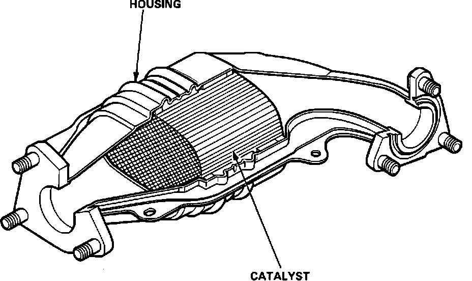

Catalytic Converter: Testing and Inspection
Three-way Catalytic Convertor:

If excessive exhaust system back pressure is suspected, remove the catalytic converter from the car, and make a visual inspection for plugging, melting, or cracking of the catalyst. Replace the catalytic converter if any of the visible area is damaged or plugged.